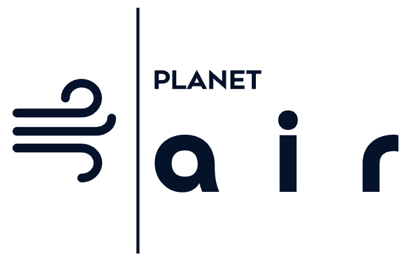

PLANET’AIR
From scientific models to a territorial decision platform
PLANET’AIR turns mobility, traffic and fleet data into road-emission, noise and air-quality indicators for territorial scenario analysis.
My role: My role covers the scientific and product roadmap, functional and system architecture, prioritisation, multidisciplinary coordination, partner demonstrations and the integration of models, APIs and geospatial services.


From mobility data to territorial decisions, with continuous calibration and stakeholder feedback.
- 01
Mobility & fleet data
Trips · GPS traces · Fleet composition · Road networks · Territorial scenarios
- 02
Traffic animation model
Traffic flows · Vehicle speeds · Congestion · Driving behaviour · Temporal dynamics
- 03
Emissions & noise models
CO₂ · NOx · Particulate matter · Energy use · Noise · uncertainty
- 04
Atmospheric dispersion
Weather · Urban morphology · Pollutant propagation · High-resolution concentration fields
- 05
Geospatial services
Interactive maps · APIs · Environmental indicators · Exposure analysis · Pollution hotspots
- 06
Scenario decision support
Diagnose · Compare · Project · Communicate · Support territorial decisions
↺ Calibration, validation, stakeholder feedback and iterative scenarios.